Daisy Yan
I am a PhD student in the Emmett Interdisciplinary Program in Environment and Resources (E-IPER) in the Doerr School of Sustainability at Stanford. I research physical interventions in the built environment to support climate adaptation and well-being in resource-constrained settings. Prior to my PhD studies, I was a research data scientist at the Proctor Foundation in the Doan Lab of Metagenomic Epidemiology, assessing the effectiveness of mass drug administration of antibiotics and monitoring antimicrobial resistance within impacted communities in the Global South. My current work utilizes methods and theory from building science and human-computer interaction to generate knowledge that can inform the development of context-specific interventions.
I am advised by Sarah Billington (Civil Engineering), Steve Luby (Medicine), and Jade Benjamin-Chung (Medicine).
Currently
Housing design, materials, and modifications in relation to extreme heat in urban and rural Bangladesh. Stay tuned!
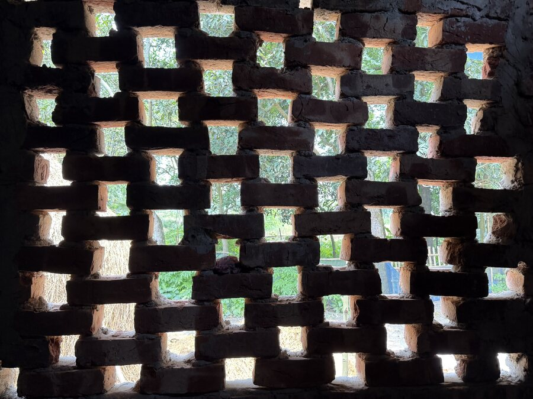
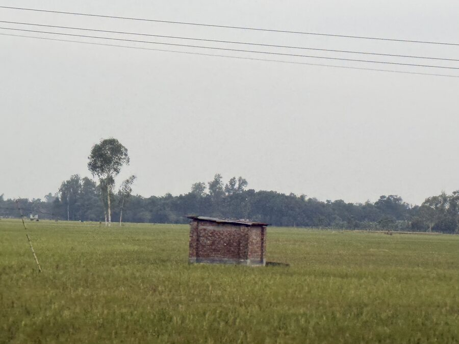
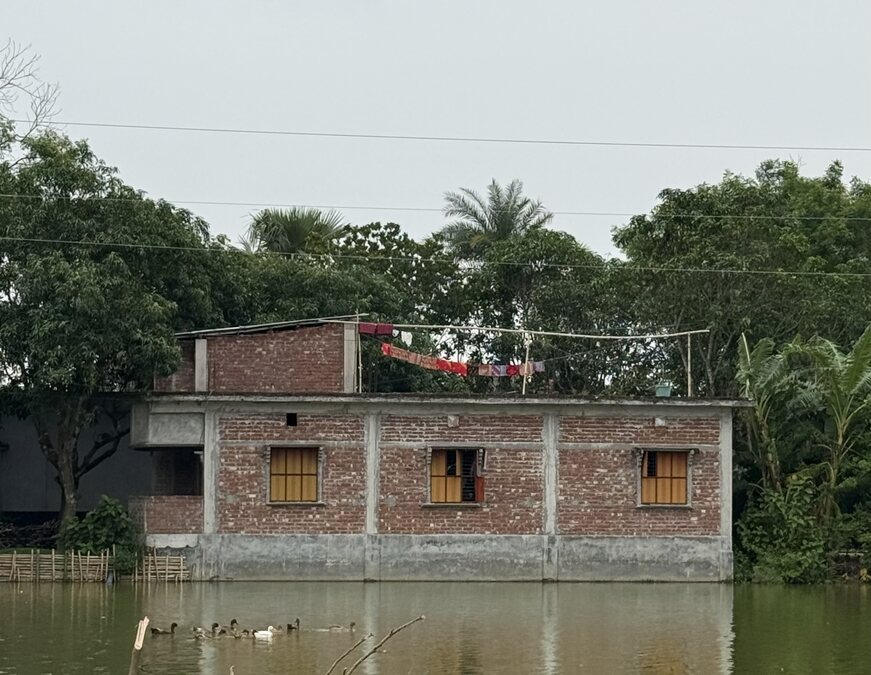
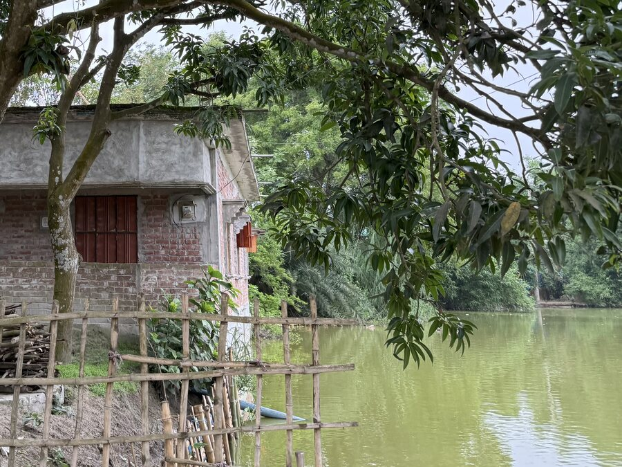
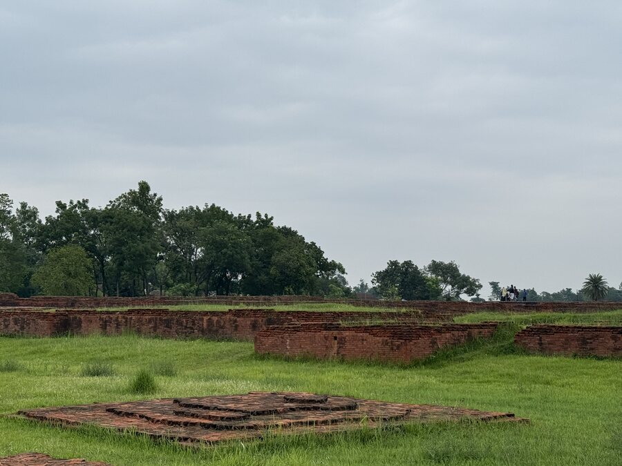
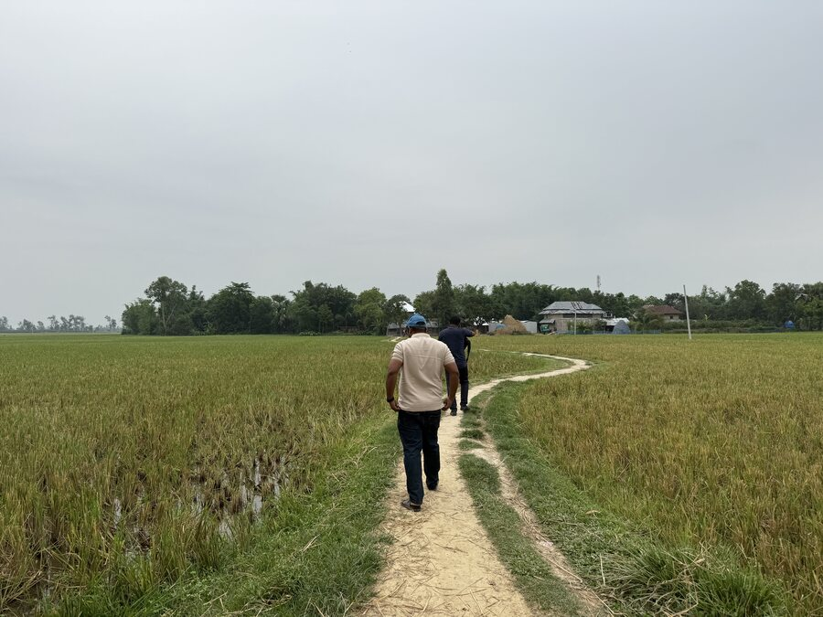
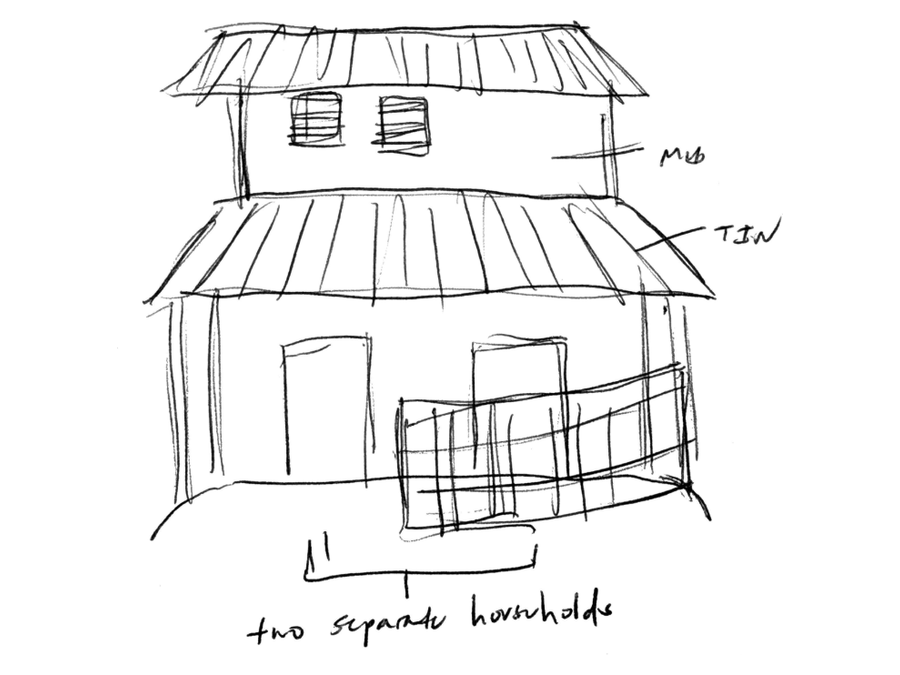
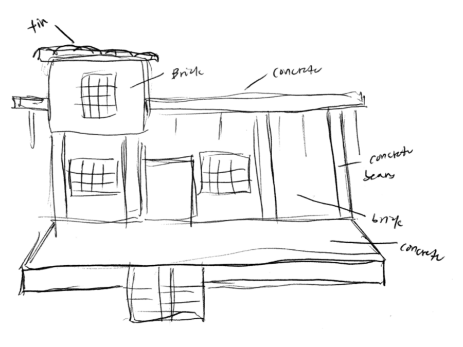
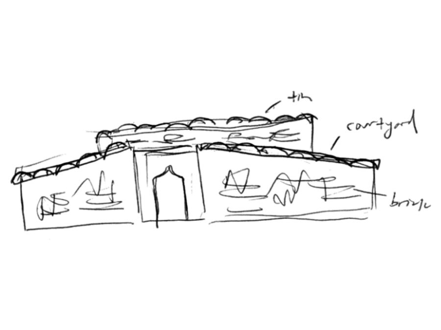
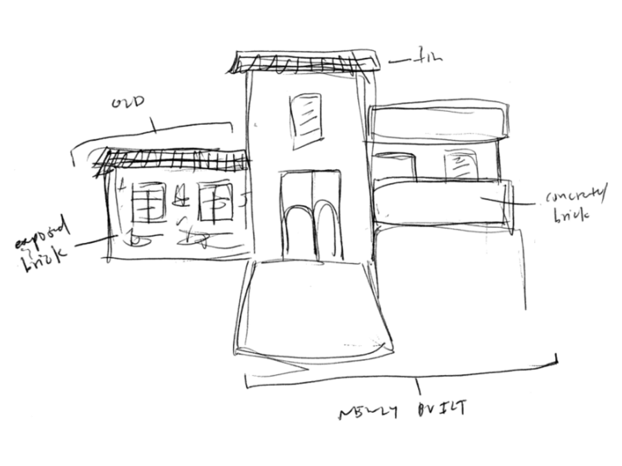
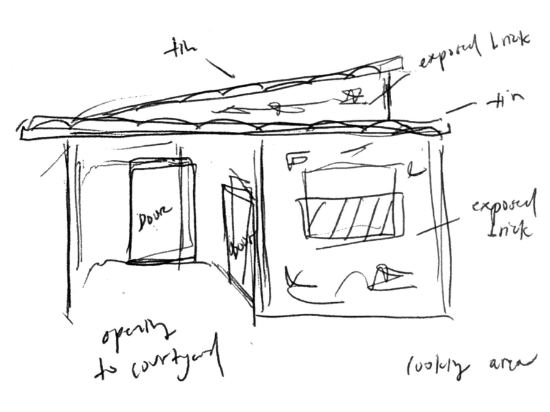
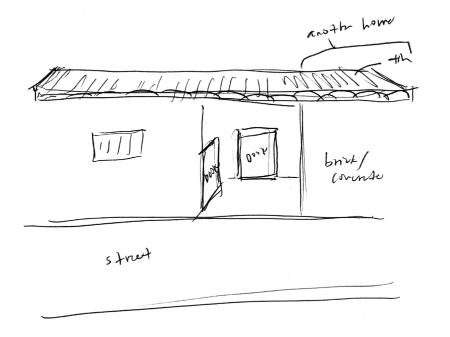
Top: Photos from the field
Bottom: Sketches of different homes
Contact
Say hello at dxyan@stanford.edu.